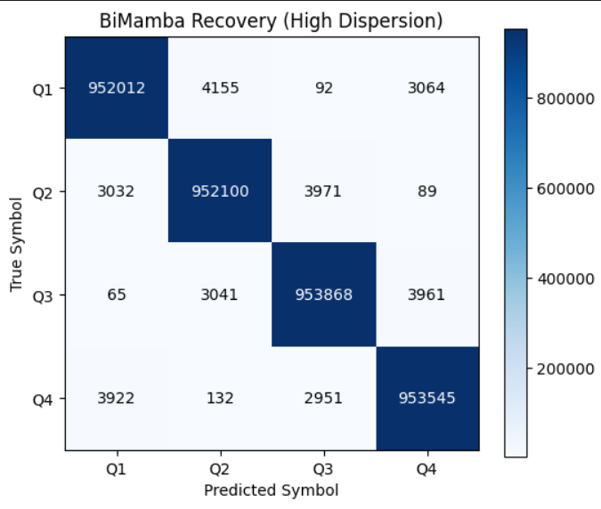
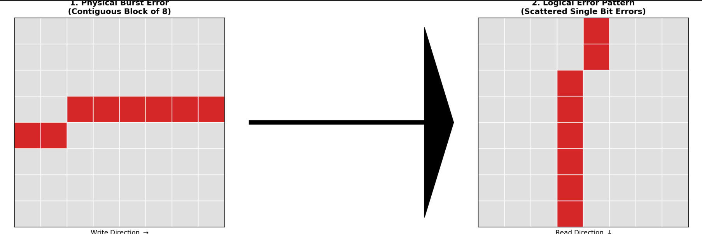
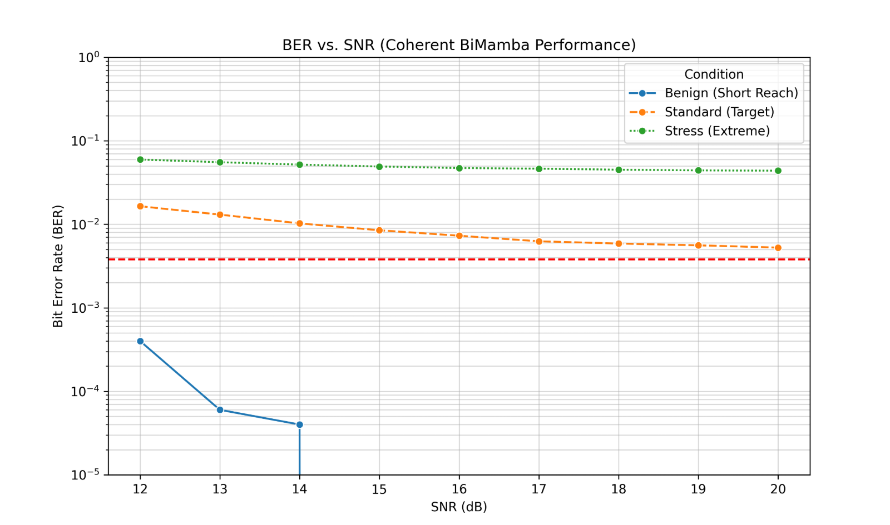

Mamba as a Coherent Optical Receiver
I've spent a good part of my career on optical communications programs, where the digital signal processing chain is a hand-built thing: an FIR filter for chromatic dispersion, a phase-locked loop for carrier recovery, block after block designed and tuned by specialists whose hours are the most expensive line in the budget. The blocks work, but they're rigid — a new impairment or a hardware revision means re-engineering the chain, not retraining it. So when a deep learning course handed me a final project, the question picked itself: can one learned model replace the chain?
Coherent links fight two kinds of damage. Chromatic dispersion smears a pulse's energy into its neighbors — into both past and future symbol slots, which matters later. Phase noise from laser linewidth rotates the constellation as a random walk. The usual deep learning candidates each fail one of these on principle: a CNN has a fixed receptive field and no memory, so it can't track a drifting phase, and a transformer's attention scales quadratically with sequence length — at the L=4096 windows dispersion compensation wants, that's roughly sixteen million interactions per layer against Mamba's four thousand. Mamba is a state-space model, a discretized differential equation with a selection mechanism that decides per-input what to remember and what to reset. A fiber channel is also a differential equation. The architecture and the physics rhyme, which is most of why I picked it.
Before trusting the architecture with waveforms I ran a cheaper sanity check: classifying power spectral density snapshots into five operating states — stable single mode, mode hop, clipped, high noise, multi-mode. A baseline 1D CNN reached 90.33% test accuracy; the official mamba-ssm implementation reached 97%, after a stretch of NaN loss explosions that learning-rate surgery eventually fixed. Good enough to proceed to the real problem.
The real problem is a neural receiver for QPSK. I built a physics simulation of the channel — the optical field as a complex time series, dispersion applied as a quadratic phase response in the frequency domain, phase noise as a Wiener process, amplifier noise as AWGN — and asked models to recover the transmitted symbols directly from the impaired waveform. One early finding: training on fully impaired signals goes nowhere. The models needed a curriculum, learning clean constellation de-mapping first and taking on dispersion and phase noise in escalating doses.
Each architecture turned out to be a learned analogue of a classical DSP block, failure modes included. In the phase-noise-heavy configuration (100 kHz linewidth, low dispersion), the CNN managed 74.11% — like the FIR filter it resembles, it has no state and can't hold a phase lock. A causal Mamba hit 98.87%; its recurrent hidden state behaves like a trained PLL, continuously re-estimating phase error from history. Then I turned the dispersion up to 20 ps/nm/km and the causal model collapsed to 79.31%, for a reason the physics predicts: dispersion is non-causal, energy arrives from future symbols as well as past ones, and a model that only looks backward is blind to half the interference. Running a second Mamba over the time-reversed sequence and fusing the two states fixed exactly that. The bidirectional model reached 99.26%.

And here's where the project stopped being a modeling exercise and became an engineering one: 99.26% accuracy is a terrible receiver. The residual errors aren't sprinkled at random — under high phase noise the model occasionally loses its lock, the constellation rotates a quarter turn, and every symbol is wrong until the model re-acquires. Classical receivers bound this with PLL loop bandwidth; a neural receiver has no such guarantee. Hamming codes, built for sparse random flips, drown in these bursts. The raw output ran a bit error rate of 1.6×10-3; Hamming alone improved it to 4.2×10-4 and still failed to close the link.
The fix is old telecom, not new ML: a matrix block interleaver, depth 42. Write the symbols into a matrix row by row, read them out column by column, and a contiguous burst of forty errors becomes forty isolated errors scattered across forty different code blocks — exactly the failure Hamming was designed for. With the interleaver in place, the same code that had been drowning delivered error-free transmission, post-FEC BER below 10-6, over the simulated 100 km link.

Two implementation details cost me more time than the architecture did. Standard batch normalization treats each feature independently, and normalizing I and Q separately destroys the relative phase between them — which in QPSK is where the data lives. The receiver only trained once I scaled both components together against global signal power. And past a few layers the Mamba stack wouldn't train at all until I added pre-norm residual connections, giving gradients a clean path and letting the deeper blocks default to identity.

The caveats are real. This is a simulated channel, not fiber. Inference throughput is nowhere near the sub-nanosecond budget of an 800G ASIC, and the hyperparameters are barely tuned — the waterfall curve in the stress regime is a boundary of my effort as much as of the architecture. But the throughput objection has an expiration date as SSM hardware matures, and the interesting result was never speed. It's that a single model learned dispersion compensation and carrier recovery jointly, with no explicit mathematics of either, plus the sobering corollary that raw model accuracy means nothing for a communications system until the error structure is engineered for. A learned receiver also suggests stranger things: a transmitter and receiver trained jointly become a modulation format that exists nowhere but in their shared weights, and a model that has absorbed a channel's physics is the seed of a digital twin for the network it lives in. Those are speculative. The error-free 100 km link is not.